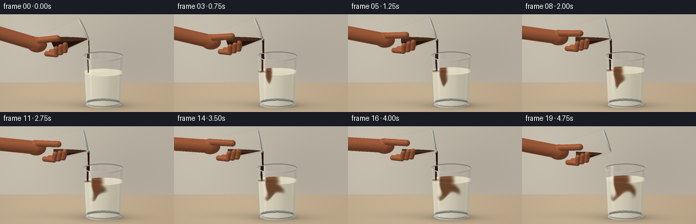
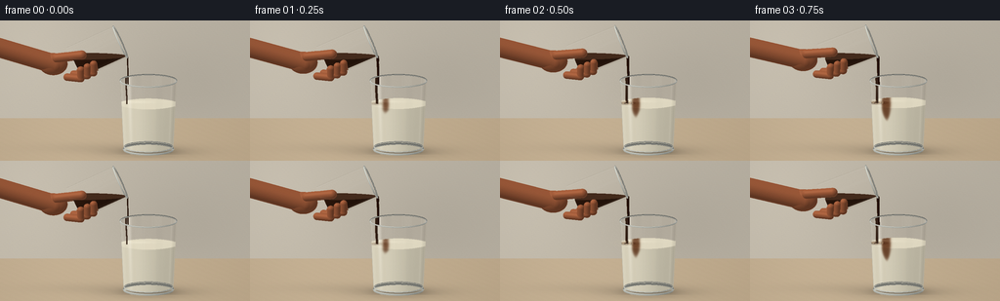
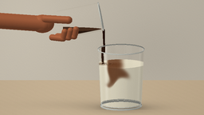

CODING AGENTS AS PIXEL WORLD MODELS
traex/GPT-6.1-Sol · material_0021
点击播放 · 原生 RGB 像素
逐轮保存的候选
回放视频、检查图与代码变化。
每份候选均可单独播放。实际图片检查记录在下方工具轨迹中。
候选 01播放与检查图
点击播放 · 原生 RGB 像素

展开代码变化
--- 上一保存版本
+++ 本次保存版本
@@ -0,0 +1,418 @@
+from pathlib import Path
+import math
+import numpy as np
+from PIL import Image, ImageDraw, ImageFilter
+import artifact_io
+
+ROOT = Path(__file__).resolve().parent
+W,H=256,144
+SS=3
+RW,RH=W*SS,H*SS
+# An entirely procedural, supersampled still-life renderer.
+UP=np.array([0.,.977, -.213]); UP/=np.linalg.norm(UP)
+D=np.array([0.,UP[2],-UP[1]])
+RIGHT=np.array([1.,0.,0.])
+CENTER=np.array([0.,2.0,0.])
+SPAN=8.
+xx,yy=np.meshgrid((np.arange(RW)+.5)/RW*SPAN-SPAN/2, (RH/2-np.arange(RH)-.5)/RW*SPAN)
+O=CENTER+xx[...,None]*RIGHT+yy[...,None]*UP-D*12
+shape=(RH,RW)
+LIGHT=np.array([-.5,.75,.45]); LIGHT/=np.linalg.norm(LIGHT)
+
+
+def norm(a):
+ return a/np.maximum(np.linalg.norm(a,axis=-1,keepdims=True),1.e-8)
+
+
+def project(p):
+ p=np.asarray(p)-CENTER
+ return np.array([RW/2+np.dot(p,RIGHT)*RW/SPAN,RH/2-np.dot(p,UP)*RW/SPAN])
+
+
+def bilinear(a,x,y):
+ x=np.clip(x,0,a.shape[1]-1.001); y=np.clip(y,0,a.shape[0]-1.001)
+ ix=x.astype(int); iy=y.astype(int); fx=x-ix; fy=y-iy
+ return (a[iy,ix]*(1-fx)*(1-fy)+a[iy,ix+1]*fx*(1-fy)+a[iy+1,ix]*(1-fx)*fy+a[iy+1,ix+1]*fx*fy)
+
+
+class Mixing:
+ def __init__(self):
+ self.nx,self.ny=132,156
+ self.X,self.Y=np.meshgrid(np.linspace(-.83,.83,self.nx),np.linspace(0,1,self.ny))
+ self.a=np.zeros((self.ny,self.nx),float)
+ self.history=[]
+ def step(self,t):
+ # A plunging jet feeds two recirculating cells, with smaller time-varying eddies.
+ X,Y=self.X,self.Y
+ vx=np.zeros_like(X); vy=np.zeros_like(X)
+ for cx,cy,rad,amp in [(.05,.59,.50,-1.02),(-.43,.37,.29,.47),(.43,.29,.24,-.39)]:
+ dx=X-cx-.035*np.sin(t*1.8+cy*9); dy=(Y-cy)*1.72
+ g=np.exp(-(dx*dx+dy*dy)/(rad*rad))
+ vx+=-dy*g*amp; vy+=dx*g*amp/1.72
+ jet=np.exp(-((X+.39+.033*np.sin(Y*9-t*2))/.115)**2)
+ vy-= .49*jet*np.exp(-((Y-.90)/.4)**2)
+ vx+=.035*np.sin(Y*19+X*11+t)*np.sin(np.pi*Y)
+ vx*=np.clip((.83-np.abs(X))/.10,0,1)
+ vy*=np.clip(Y/.065,0,1)*np.clip((1-Y)/.018,0,1)
+ dt=.0125
+ col=(X+.83)/1.66*(self.nx-1)-vx*dt*(self.nx-1)/1.66
+ row=Y*(self.ny-1)-vy*dt*(self.ny-1)
+ a=bilinear(self.a,col,row)
+ # Very slight molecular mixing; advection retains the curling milk ribbons.
+ padded=np.pad(a,1,mode='edge')
+ a=.994*a+.0015*(padded[1:-1,:-2]+padded[1:-1,2:]+padded[:-2,1:-1]+padded[2:,1:-1])
+ strength=np.clip(t/.28,0,1)*np.clip((4.65-t)/.4,0,1)
+ source=np.exp(-((X+.39)/.066)**2-((Y-.987)/.035)**2)
+ a+=source*strength*dt*11*(1-a)
+ self.a=np.clip(a,0,1)
+ def field(self,x,y,z,fill,t):
+ # Depth-varying refraction/advection keeps the volume, not a flat decal.
+ x=x-.08*np.sin(z*5+y*5-t*.45)*(1-np.clip(y/fill,0,1))
+ xrel=x-.75
+ c=bilinear(self.a,(xrel+.83)/1.66*(self.nx-1),np.clip((y-.13)/(fill-.13),0,1)*(self.ny-1))
+ c*=.78+.22*np.cos(z*3.0)
+ return np.clip(c,0,1)
+
+
+def environment(v):
+ # Broad, soft window reflection plus warm studio walls.
+ v=np.broadcast_to(v,shape+(3,)) if np.asarray(v).ndim==1 else v
+ f=np.clip(v[...,1]*.5+.5,0,1)
+ col=np.array([.62,.57,.49])+f[...,None]*np.array([.22,.22,.23])
+ w=np.exp(-((v[...,0]+.62)/.22)**8-((v[...,1]-.28)/.61)**8)
+ col=col*(1-w[...,None]) + np.array([1.,.98,.92])*w[...,None]
+ # Two narrower bright softboxes are especially readable in clear glass.
+ s=np.exp(-((v[...,0]+.29)/.055)**2-((v[...,1]-.20)/.67)**4)
+ col=col*(1-s[...,None]*.65)+np.array([1.,1.,.98])*s[...,None]*.65
+ dark=np.exp(-((v[...,0]-.68)/.18)**4-((v[...,1]-.03)/.8)**4)
+ col*=1-.48*dark[...,None]
+ return col
+
+
+def background():
+ tw=(-5-O[...,2])/D[2]
+ p=O+tw[...,None]*D
+ wall=(p[...,1]>0)
+ y=p[...,1]; x=p[...,0]
+ base=np.zeros(shape+(3,))
+ lum=.94-.055*(x+2)/8-.055*np.exp(-((x-1.7)/2.3)**2-(y-1.1)**2/3)
+ lum+=.028*np.exp(-((x+3)/1.6)**2-((y-3)/2.5)**2)
+ grain=.0012*(np.sin(x*49+y*43)+np.sin(x*19-y*101))
+ base[:]=np.array([.81,.777,.714])*(lum+grain)[...,None]
+ tf=-O[...,1]/D[1]
+ pf=O+tf[...,None]*D
+ xf,zf=pf[...,0],pf[...,2]
+ grain=(.005*np.sin(zf*48+np.sin(xf*2)*3)+.003*np.sin(zf*160+np.sin(xf*.8)*9)+.002*np.sin(zf*377+xf*17))
+ wood=np.array([.74,.660,.544])+(grain+.036*np.exp(-((xf+2)/4)**2))[...,None]
+ # Broad cast shadows and sharp contact shadow underneath the heavy base.
+ sh=.19*np.exp(-((xf-.86)/1.3)**2-((zf-.12)/.75)**2)
+ sh+=.13*np.exp(-((xf-.79)/.83)**4-((zf)/.57)**2)
+ sh+=.055*np.exp(-((xf+.4)/2.4)**2-((zf+.50)/.8)**2)
+ wood*=1-sh[...,None]
+ # Faint refracted caustic on the wood.
+ caust=.07*np.exp(-((xf-.85)/.90)**2-((zf-.58)/.12)**2)
+ wood+=caust[...,None]*np.array([1.,.87,.66])
+ base[~wall]=wood[~wall]
+ return np.clip(base,0,1),np.where(wall,tw,tf)
+
+
+# Finite, optionally tapered cylinders are intersected directly, in their own coordinates.
+def vessel_hit(base,axis,height,r0,r1,level=None,inner=False):
+ axis=np.asarray(axis); base=np.asarray(base)
+ q=O-base
+ oy=np.sum(q*axis,axis=-1); dy=float(np.dot(D,axis))
+ op=q-oy[...,None]*axis; dp=D-dy*axis
+ k=(r1-r0)/height
+ ro=r0+k*oy
+ aa=np.dot(dp,dp)-(k*dy)**2
+ bb=2*(np.sum(op*dp,axis=-1)-ro*k*dy)
+ cc=np.sum(op*op,axis=-1)-ro*ro
+ disc=bb*bb-4*aa*cc
+ sq=np.sqrt(np.maximum(disc,0))
+ t=np.full(shape,np.inf); normal=np.zeros(shape+(3,)); kind=np.zeros(shape,dtype=np.int8)
+ for ts in [(-bb-sq)/(2*aa),(-bb+sq)/(2*aa)]:
+ yy=oy+ts*dy
+ p=O+ts[...,None]*D
+ valid=(disc>=0)&(ts>0)&(yy>=0)&(yy<=height)
+ if level is not None: valid &= p[...,1]<=level+1.e-5
+ upd=valid&(ts<t)
+ radial=op+ts[...,None]*dp
+ n=norm(radial-k*(r0+k*yy)[...,None]*axis)
+ t=np.where(upd,ts,t);normal=np.where(upd[...,None],n,normal)
+ # The bottom is a solid flat glass disk (or the bottom of the beverage).
+ if abs(dy)>1.e-7:
+ ts=-oy/dy
+ p=O+ts[...,None]*D
+ radial=p-base
+ valid=(np.sum(radial*radial,axis=-1)<=r0*r0)&(ts>0)
+ if level is not None: valid&=p[...,1]<=level
+ upd=valid&(ts<t)
+ t=np.where(upd,ts,t);normal=np.where(upd[...,None],-axis,normal);kind=np.where(upd,2,kind)
+ if level is not None:
+ ts=(level-O[...,1])/D[1]
+ p=O+ts[...,None]*D
+ q=p-base; a=np.sum(q*axis,axis=-1); radial=q-a[...,None]*axis
+ valid=(a>=0)&(a<=height)&(np.sum(radial*radial,axis=-1)<=(r0+k*a)**2)&(ts>0)
+ upd=valid&(ts<t)
+ t=np.where(upd,ts,t);normal=np.where(upd[...,None],np.array([0.,1.,0.]),normal);kind=np.where(upd,1,kind)
+ return t,normal,kind
+
+
+def coffee_shade(p,n,top=False):
+ ndl=np.clip(np.sum(n*LIGHT,axis=-1),0,1)
+ view=-D
+ refl=D-2*np.sum(n*D,axis=-1)[...,None]*n
+ env=environment(refl)
+ fr=.025+.28*(1-np.abs(np.sum(n*view,axis=-1)))**4
+ thin=.035+.11*(1-np.abs(n[...,2]))**2
+ col=np.array([.125,.049,.013])*(.7+.5*ndl)[...,None]
+ col+=thin[...,None]*np.array([.29,.12,.025])
+ col=col*(1-fr[...,None])+env*fr[...,None]
+ if top:
+ wave=.012*np.sin(p[...,0]*23+p[...,2]*29)
+ col+=wave[...,None]*np.array([.6,.3,.1])
+ return col
+
+
+def milk_shade(p,n,kind,fill,t,mix):
+ # Integrate several points below the translucent milk skin.
+ c=np.zeros(shape)
+ for depth,w in [(0.,.45),(.12,.27),(.28,.18),(.46,.10)]:
+ sample=p+D*depth
+ c+=mix.field(sample[...,0],sample[...,1],sample[...,2],fill,t)*w
+ # The high pigment opacity gives dark coffee filaments, diluted to warm caramel.
+ c=1-np.exp(-2.85*c)
+ c=np.clip(c,0,.95)
+ ndl=np.maximum(0,np.sum(n*LIGHT,axis=-1))
+ ivory=np.array([.913,.886,.793])
+ caramel=np.array([.365,.179,.072])
+ col=ivory[None,None,:]*(1-c[...,None])+caramel[None,None,:]*c[...,None]
+ col*= (.79+.20*ndl)[...,None]
+ # Forward-scattering softly lights the edges of the milk.
+ col+=.028*(1-np.abs(n[...,2]))[...,None]*np.array([1.,.91,.77])
+ istop=kind==1
+ rr=np.sqrt((p[...,0]-.09)**2+p[...,2]**2)
+ ring=np.cos(rr*52-t*10)*np.exp(-rr*4)*np.clip(t/.5,0,1)
+ pool=np.exp(-(rr/.23)**2)*np.clip(t/.6,0,1)*np.clip((4.7-t)/.45,0,1)
+ topcol=col*(1-.76*pool[...,None])+np.array([.16,.062,.019])*.76*pool[...,None]
+ topcol+=.018*ring[...,None]
+ topcol+=.037*np.exp(-((p[...,0]-.30)/.65)**2-((p[...,2]+.3)/.20)**2)[...,None]
+ col=np.where(istop[...,None],topcol,col)
+ return np.clip(col,0,1)
+
+
+def ellipsoid(center,radius):
+ q=(O-center)/radius; dd=D/radius
+ aa=np.dot(dd,dd); bb=np.sum(q*dd,axis=-1); cc=np.sum(q*q,axis=-1)-1
+ disc=bb*bb-aa*cc
+ ts=(-bb-np.sqrt(np.maximum(disc,0)))/aa
+ ok=(disc>=0)&(ts>0)
+ p=O+ts[...,None]*D
+ n=norm((p-center)/(radius*radius))
+ return np.where(ok,ts,np.inf),n
+
+
+def capsule(a,b,r):
+ a=np.array(a);b=np.array(b);ba=b-a;oa=O-a
+ baba=np.dot(ba,ba); bard=np.dot(ba,D); baoa=np.sum(oa*ba,axis=-1)
+ rdoa=np.sum(oa*D,axis=-1); oaoa=np.sum(oa*oa,axis=-1)
+ A=baba-bard*bard; B=baba*rdoa-baoa*bard; C=baba*oaoa-baoa*baoa-r*r*baba
+ h=B*B-A*C
+ ts=(-B-np.sqrt(np.maximum(h,0)))/A
+ y=baoa+ts*bard
+ ok=(h>=0)&(ts>0)&(y>=0)&(y<=baba)
+ p=O+ts[...,None]*D
+ n=norm(p-a-ba*np.clip(y/baba,0,1)[...,None])
+ best=np.where(ok,ts,np.inf)
+ for c in [a,b]:
+ te,ne=ellipsoid(c,np.array([r,r,r]))
+ upd=te<best
+ best=np.where(upd,te,best);n=np.where(upd[...,None],ne,n)
+ return best,n
+
+
+def add_skin(img,zbuf,axis,base,e1,t):
+ # Only the gently gripping hand and forearm enter the left edge of the composition.
+ origin=base-axis*.33
+ palm=origin+np.array([-.28,.10,-.04])
+ parts=[]
+ parts.append(('cap',np.array([-4.3,3.47,-.10]),palm,.31))
+ parts.append(('ell',palm+np.array([-.06,.01,.03]),np.array([.46,.36,.27]),None))
+ # Fingers curl around the lower/front edge of the coffee glass.
+ for a in [.05,.28,.50]:
+ start=base+axis*a+e1*.43+np.array([-.42,-.04,.21])
+ mid=base+axis*a+e1*.47+np.array([0.,0.,.44])
+ end=base+axis*(a+.12)+e1*.20+np.array([0.,0.,.49])
+ parts.append(('cap',start,mid,.12))
+ parts.append(('cap',mid,end,.115))
+ th0=palm+np.array([.05,.25,.21])
+ th1=base+axis*.41-e1*.21+np.array([0.,0.,.43])
+ parts.append(('cap',th0,th1,.15))
+ for typ,a,b,r in parts:
+ te,n=ellipsoid(a,b) if typ=='ell' else capsule(a,b,r)
+ good=(te<zbuf)
+ p=O+np.where(np.isfinite(te),te,0)[...,None]*D
+ nd=np.maximum(0,np.sum(n*LIGHT,axis=-1))
+ skin=np.array([.64,.367,.235])*(.58+.47*nd)[...,None]
+ rim=np.maximum(0,1-np.abs(np.sum(n*(-D),axis=-1)))**3
+ skin+=rim[...,None]*np.array([.095,.04,.02])
+ spe=np.maximum(0,np.sum(n*norm(LIGHT-D),axis=-1))**27*.052
+ skin+=spe[...,None]*np.array([1.,.79,.61])
+ texture=.003*np.sin(p[...,0]*191+p[...,1]*162)*np.sin(p[...,2]*231)
+ skin+=texture[...,None]
+ img=np.where(good[...,None],skin,img);zbuf=np.where(good,te,zbuf)
+ return img,zbuf
+
+
+def glass_overlay(img,zbuf,base,axis,height,r0,r1):
+ te,n,_=vessel_hit(base,axis,height,r0,r1)
+ exists=np.isfinite(te)
+ p=O+np.where(exists,te,0)[...,None]*D
+ fac=np.abs(np.sum(n*(-D),axis=-1))
+ fres=.035+.78*(1-fac)**5
+ refl=D-2*np.sum(n*D,axis=-1)[...,None]*n
+ env=environment(refl)
+ # Subtle displacement from two refracting walls, increasing at the curved edges.
+ offx=n[...,0]*(1-fac)**.6*4.2*SS
+ offy=(n[...,1]*UP[1]+n[...,2]*UP[2])*(1-fac)*1.2*SS
+ gridx,gridy=np.meshgrid(np.arange(RW),np.arange(RH))
+ warped=np.stack([bilinear(img[...,c],gridx-offx,gridy-offy) for c in range(3)],-1)
+ good=exists&(te<=zbuf+.004)
+ # Transmitted color remains highly clear, with slightly warm thick edges.
+ col=warped*(1-fres[...,None])+env*fres[...,None]
+ absorption=(1-fac)**7*.105
+ col*=1-absorption[...,None]*np.array([.65,.37,.22])
+ # Long photographic highlights: a broad window and a slender opposite reflection.
+ local=p-base
+ ax=np.sum(local*np.asarray(axis),axis=-1)
+ side=np.sum(n*RIGHT,axis=-1)
+ stripe=np.exp(-((side+.68)/.065)**2)*(.40+.6*np.maximum(0,ax/height))
+ stripe2=np.exp(-((side-.82)/.027)**2)*.36
+ high=np.clip(stripe*.35+stripe2*.19,0,.7)
+ col=col*(1-high[...,None])+np.array([1.,.982,.937])*high[...,None]
+ img=np.where(good[...,None],col,img)
+ return np.clip(img,0,1)
+
+
+def ring(draw,base,axis,h,r,thickness,alpha=1):
+ axis=np.asarray(axis);e1=norm(np.cross(np.array([0.,0.,1.]),axis));e2=np.cross(axis,e1)
+ center=np.asarray(base)+axis*h
+ count=220
+ for j in range(count):
+ a=j/count*math.tau;b=(j+1)/count*math.tau
+ pp=center+r*(e1*np.cos(a)+e2*np.sin(a));qq=center+r*(e1*np.cos(b)+e2*np.sin(b))
+ n=e1*np.cos(a)+e2*np.sin(a)
+ view=abs(float(np.dot(n,-D)))
+ # Dark far side, luminous near side, refracted silver edge.
+ bright=.65+.28*max(0,np.dot(n,LIGHT))
+ col=np.array([.81,.827,.79])*bright
+ col+=.15*(1-view)**4
+ if np.sin(a)<0: col*=.76
+ c=tuple(np.clip(col*255,0,255).astype(int))
+ draw.line([tuple(project(pp)),tuple(project(qq))],fill=c,width=max(1,round(thickness*RW/SPAN)))
+ # A hairline inner glint supplies the thickness of the polished lip.
+ r-=thickness*.31
+ for j in range(count):
+ a=j/count*math.tau;b=(j+1)/count*math.tau
+ pp=center+r*(e1*np.cos(a)+e2*np.sin(a));qq=center+r*(e1*np.cos(b)+e2*np.sin(b))
+ bright=.73+.25*max(0,np.dot(e1*np.cos(a)+e2*np.sin(a),LIGHT))
+ c=tuple((np.array([.99,.983,.94])*bright*255).astype(int))
+ draw.line([tuple(project(pp)),tuple(project(qq))],fill=c,width=max(1,round(thickness*.22*RW/SPAN)))
+
+
+def surface_details(image,t,fill):
+ layer=Image.new('RGBA',(RW,RH));d=ImageDraw.Draw(layer)
+ amp=np.clip(t/.5,0,1)*np.clip((4.7-t)/.4,0,1)
+ # Delicate circular disturbances around the falling stream, projected onto the milk.
+ for j in range(3):
+ r=.105+((t*.38+j*.12)%.45)
+ pts=[tuple(project([.09+r*np.cos(a),fill+.006,r*np.sin(a)])) for a in np.linspace(0,math.tau,100)]
+ d.line(pts,fill=(238,213,172,int(21*amp*(1-r/.7))),width=SS)
+ # Small bubbles confined to the coffee impact, not a foam cap.
+ for j in range(13):
+ a=j*2.399+t*.3
+ r=.09+.12*((j*.713)%1)
+ x=.09+r*np.cos(a);z=r*np.sin(a)
+ px,py=project([x,fill+.009,z]);rr=(.014+.012*((j*.38)%1))*RW/SPAN
+ d.ellipse([px-rr,py-rr*.38,px+rr,py+rr*.38],outline=(242,212,163,int(127*amp)),width=max(1,SS//2))
+ image=Image.alpha_composite(image.convert('RGBA'),layer).convert('RGB')
+ return image
+
+
+def render(frame,mix):
+ t=frame/4
+ fill=1.56+.245*np.clip(t/4.6,0,1)
+ theta=math.radians(65+14*np.sin(min(t,4.35)/4.35*math.pi/2)-max(t-4.35,0)*20)
+ axis=np.array([math.sin(theta),math.cos(theta),0.])
+ e1=np.array([math.cos(theta),-math.sin(theta),0.])
+ lip=np.array([.08+.017*np.sin(t*1.5),3.10,0.])
+ h=1.66; r=.55
+ top=lip-r*e1;base=top-h*axis
+ img,zbuf=background()
+ # Liquids precede the transparent glass boundaries.
+ b=np.array([.75,.135,0.]);a=np.array([0.,1.,0.])
+ te,n,k=vessel_hit(b,a,2.15,.754,.861,fill)
+ p=O+np.where(np.isfinite(te),te,0)[...,None]*D
+ col=milk_shade(p,n,k,fill,t,mix)
+ ok=te<zbuf
+ img=np.where(ok[...,None],col,img);zbuf=np.where(ok,te,zbuf)
+ coffeelevel=lip[1]+.026-max(t-4.30,0)*.28
+ te,n,k=vessel_hit(base+axis*.10,axis,h-.10,r-.046,r-.045,coffeelevel)
+ p=O+np.where(np.isfinite(te),te,0)[...,None]*D
+ col=coffee_shade(p,n)
+ ok=te<zbuf
+ img=np.where(ok[...,None],col,img);zbuf=np.where(ok,te,zbuf)
+ img,zbuf=add_skin(img,zbuf,axis,base,e1,t)
+ # The narrow falling tube accelerates and narrows gently in free fall.
+ flow=np.clip((t+.1)/.4,0,1)*np.clip((4.6-t)/.33,0,1)
+ if flow>0:
+ points=[]
+ for j in range(13):
+ u=j/12
+ x=lip[0]+.035*u+.008*np.sin(u*9-t*6)*u
+ y=lip[1]-(lip[1]-fill)*u
+ z=.006*np.sin(u*8-t*3)
+ points.append([x,y,z])
+ for j in range(12):
+ rad=(.046-.015*(j/12)**.5)*math.sqrt(flow)
+ te,n=capsule(points[j],points[j+1],rad)
+ p=O+np.where(np.isfinite(te),te,0)[...,None]*D
+ col=coffee_shade(p,n)
+ gl=np.maximum(0,np.sum(n*norm(LIGHT-D),axis=-1))**45
+ col+=gl[...,None]*np.array([.33,.25,.15])
+ ok=te<zbuf
+ img=np.where(ok[...,None],col,img);zbuf=np.where(ok,te,zbuf)
+ # Reflections and refraction on both thick-walled, truly clear glasses.
+ img=glass_overlay(img,zbuf,[.75,.02,0.],[0.,1.,0.],2.30,.795,.905)
+ img=glass_overlay(img,zbuf,base,axis,h,r,r)
+ image=Image.fromarray(np.uint8(np.clip(img,0,1)*255))
+ image=surface_details(image,t,fill)
+ d=ImageDraw.Draw(image)
+ ring(d,[.75,.02,0.],[0.,1.,0.],2.30,.906,.045)
+ ring(d,[.75,.02,0.],[0.,1.,0.],.06,.793,.067)
+ ring(d,[.75,.02,0.],[0.,1.,0.],.13,.772,.028)
+ ring(d,base,axis,h,r,.043)
+ # Polished base of the pouring tumbler, partly hidden by the fingers.
+ # Only a far-side arc is visible; the complete end stays behind the grip.
+ image=image.resize((W,H),Image.Resampling.LANCZOS)
+ arr=np.asarray(image).astype(float)
+ # A subtle, fixed film grain and an almost imperceptible lens vignette.
+ Y,X=np.mgrid[0:H,0:W]
+ vignette=1-.036*((X-W*.50)**2/(W*.70)**2+(Y-H*.44)**2/(H*.92)**2)
+ arr*=vignette[...,None]
+ rng=np.random.default_rng(902)
+ arr+=rng.normal(0,.27,(H,W,1))
+ return np.uint8(np.clip(arr,0,255))
+
+
+def main():
+ mixing=Mixing();frames=[]
+ for i in range(20):
+ if i:
+ for j in range(20):
+ mixing.step((i-1)/4+(j+1)*.0125)
+ frames.append(render(i,mixing))
+ print(f'frame {i+1}/20',flush=True)
+ artifact_io.save(np.stack(frames),ROOT)
+
+if __name__=='__main__':main()
候选 02播放与检查图
点击播放 · 原生 RGB 像素

展开代码变化
--- 上一保存版本
+++ 本次保存版本
@@ -13,7 +13,7 @@
D=np.array([0.,UP[2],-UP[1]])
RIGHT=np.array([1.,0.,0.])
CENTER=np.array([0.,2.0,0.])
-SPAN=8.
+SPAN=7.25
xx,yy=np.meshgrid((np.arange(RW)+.5)/RW*SPAN-SPAN/2, (RH/2-np.arange(RH)-.5)/RW*SPAN)
O=CENTER+xx[...,None]*RIGHT+yy[...,None]*UP-D*12
shape=(RH,RW)
@@ -45,12 +45,13 @@
# A plunging jet feeds two recirculating cells, with smaller time-varying eddies.
X,Y=self.X,self.Y
vx=np.zeros_like(X); vy=np.zeros_like(X)
- for cx,cy,rad,amp in [(.05,.59,.50,-1.02),(-.43,.37,.29,.47),(.43,.29,.24,-.39)]:
+ for cx,cy,rad,amp in [(.04,.51,.62,1.38),(-.43,.29,.26,-.42),(.45,.31,.27,-.56)]:
dx=X-cx-.035*np.sin(t*1.8+cy*9); dy=(Y-cy)*1.72
g=np.exp(-(dx*dx+dy*dy)/(rad*rad))
vx+=-dy*g*amp; vy+=dx*g*amp/1.72
jet=np.exp(-((X+.39+.033*np.sin(Y*9-t*2))/.115)**2)
- vy-= .49*jet*np.exp(-((Y-.90)/.4)**2)
+ vy-= .87*jet*np.exp(-((Y-.88)/.53)**2)
+ vx*=1.35; vy*=1.35
vx+=.035*np.sin(Y*19+X*11+t)*np.sin(np.pi*Y)
vx*=np.clip((.83-np.abs(X))/.10,0,1)
vy*=np.clip(Y/.065,0,1)*np.clip((1-Y)/.018,0,1)
@@ -62,8 +63,8 @@
padded=np.pad(a,1,mode='edge')
a=.994*a+.0015*(padded[1:-1,:-2]+padded[1:-1,2:]+padded[:-2,1:-1]+padded[2:,1:-1])
strength=np.clip(t/.28,0,1)*np.clip((4.65-t)/.4,0,1)
- source=np.exp(-((X+.39)/.066)**2-((Y-.987)/.035)**2)
- a+=source*strength*dt*11*(1-a)
+ source=np.exp(-((X+.39)/.066)**2-((Y-.974)/.058)**2)
+ a+=source*strength*dt*17*(1-a)
self.a=np.clip(a,0,1)
def field(self,x,y,z,fill,t):
# Depth-varying refraction/advection keeps the volume, not a flat decal.
@@ -187,9 +188,9 @@
ivory=np.array([.913,.886,.793])
caramel=np.array([.365,.179,.072])
col=ivory[None,None,:]*(1-c[...,None])+caramel[None,None,:]*c[...,None]
- col*= (.79+.20*ndl)[...,None]
+ col*= (.69+.30*ndl)[...,None]
# Forward-scattering softly lights the edges of the milk.
- col+=.028*(1-np.abs(n[...,2]))[...,None]*np.array([1.,.91,.77])
+ col+=.055*(1-np.abs(n[...,2]))[...,None]*np.array([1.,.91,.77])
istop=kind==1
rr=np.sqrt((p[...,0]-.09)**2+p[...,2]**2)
ring=np.cos(rr*52-t*10)*np.exp(-rr*4)*np.clip(t/.5,0,1)
@@ -253,13 +254,15 @@
good=(te<zbuf)
p=O+np.where(np.isfinite(te),te,0)[...,None]*D
nd=np.maximum(0,np.sum(n*LIGHT,axis=-1))
- skin=np.array([.64,.367,.235])*(.58+.47*nd)[...,None]
+ skin=np.array([.67,.397,.268])*(.52+.57*nd)[...,None]
rim=np.maximum(0,1-np.abs(np.sum(n*(-D),axis=-1)))**3
skin+=rim[...,None]*np.array([.095,.04,.02])
spe=np.maximum(0,np.sum(n*norm(LIGHT-D),axis=-1))**27*.052
skin+=spe[...,None]*np.array([1.,.79,.61])
texture=.003*np.sin(p[...,0]*191+p[...,1]*162)*np.sin(p[...,2]*231)
skin+=texture[...,None]
+ crease=.020*np.exp(-((p[...,0]+1.92)/.06)**2)*np.clip((p[...,1]-2.84)/.35,0,1)
+ skin-=crease[...,None]*np.array([1.,.6,.4])
img=np.where(good[...,None],skin,img);zbuf=np.where(good,te,zbuf)
return img,zbuf
候选 03播放与检查图
可观测工具轨迹
实际执行的命令与返回图片。
命令 1exit 0
/bin/bash -lc 'ls -la && cat prompt.txt && cat GENERATION_RULES.md && cat task_spec.json'
命令 2exit 0
/bin/bash -lc "cat artifact_io.py && python - <<'PY'
import numpy,PIL
print('ready')
PY"命令 3exit 0
/bin/bash -lc "cat > generate.py <<'PY'
from pathlib import Path
import math
import numpy as np
from PIL import Image, ImageDraw, ImageFilter
import artifact_io
ROOT = Path(__file__).resolve().parent
W,H=256,144
SS=3
RW,RH=W*SS,H*SS
# An entirely procedural, supersampled still-life renderer.
UP=np.array([0.,.977, -.213]); UP/=np.linalg.norm(UP)
D=np.array([0.,UP[2],-UP[1]])
RIGHT=np.array([1.,0.,0.])
CENTER=np.array([0.,2.0,0.])
SPAN=8.
xx,yy=np.meshgrid((np.arange(RW)+.5)/RW*SPAN-SPAN/2, (RH/2-np.arange(RH)-.5)/RW*SPAN)
O=CENTER+xx[...,None]*RIGHT+yy[...,None]*UP-D*12
shape=(RH,RW)
LIGHT=np.array([-.5,.75,.45]); LIGHT/=np.linalg.norm(LIGHT)
def norm(a):
return a/np.maximum(np.linalg.norm(a,axis=-1,keepdims=True),1.e-8)
def project(p):
p=np.asarray(p)-CENTER
return np.array([RW/2+np.dot(p,RIGHT)*RW/SPAN,RH/2-np.dot(p,UP)*RW/SPAN])
def bilinear(a,x,y):
x=np.clip(x,0,a.shape[1]-1.001); y=np.clip(y,0,a.shape[0]-1.001)
ix=x.astype(int); iy=y.astype(int); fx=x-ix; fy=y-iy
return (a[iy,ix]*(1-fx)*(1-fy)+a[iy,ix+1]*fx*(1-fy)+a[iy+1,ix]*(1-fx)*fy+a[iy+1,ix+1]*fx*fy)
class Mixing:
def __init__(self):
self.nx,self.ny=132,156
self.X,self.Y=np.meshgrid(np.linspace(-.83,.83,self.nx),np.linspace(0,1,self.ny))
self.a=np.zeros((self.ny,self.nx),float)
self.history=[]
def step(self,t):
# A plunging jet feeds two recirculating cells, with smaller time-varying eddies.
X,Y=self.X,self.Y
vx=np.zeros_like(X); vy=np.zeros_like(X)
for cx,cy,rad,amp in [(.05,.59,.50,-1.02),(-.43,.37,.29,.47),(.43,.29,.24,-.39)]:
dx=X-cx-.035*np.sin(t*1.8+cy*9); dy=(Y-cy)*1.72
g=np.exp(-(dx*dx+dy*dy)/(rad*rad))
vx+=-dy*g*amp; vy+=dx*g*amp/1.72
jet=np.exp(-((X+.39+.033*np.sin(Y*9-t*2))/.115)**2)
vy-= .49*jet*np.exp(-((Y-.90)/.4)**2)
vx+=.035*np.sin(Y*19+X*11+t)*np.sin(np.pi*Y)
vx*=np.clip((.83-np.abs(X))/.10,0,1)
vy*=np.clip(Y/.065,0,1)*np.clip((1-Y)/.018,0,1)
dt=.0125
col=(X+.83)/1.66*(self.nx-1)-vx*dt*(self.nx-1)/1.66
row=Y*(self.ny-1)-vy*dt*(self.ny-1)
a=bilinear(self.a,col,row)
# Very slight molecular mixing; advection retains the curling milk ribbons.
padded=np.pad(a,1,mode='edge')
a=.994*a+.0015*(padded[1:-1,:-2]+padded[1:-1,2:]+padded[:-2,1:-1]+padded[2:,1:-1])
strength=np.clip(t/.28,0,1)*np.clip((4.65-t)/.4,0,1)
source=np.exp(-((X+.39)/.066)**2-((Y-.987)/.035)**2)
a+=source*strength*dt*11*(1-a)
self.a=np.clip(a,0,1)
def field(self,x,y,z,fill,t):
# Depth-varying refraction/advection keeps the volume, not a flat decal.
x=x-.08*np.sin(z*5+y*5-t*.45)*(1-np.clip(y/fill,0,1))
xrel=x-.75
c=bilinear(self.a,(xrel+.83)/1.66*(self.nx-1),np.clip((y-.13)/(fill-.13),0,1)*(self.ny-1))
c*=.78+.22*np.cos(z*3.0)
return np.clip(c,0,1)
def environment(v):
# Broad, soft window reflection plus warm studio walls.
v=np.broadcast_to(v,shape+(3,)) if np.asarray(v).ndim==1 else v
f=np.clip(v[...,1]*.5+.5,0,1)
col=np.array([.62,.57,.49])+f[...,None]*np.array([.22,.22,.23])
w=np.exp(-((v[...,0]+.62)/.22)**8-((v[...,1]-.28)/.61)**8)
col=col*(1-w[...,None]) + np.array([1.,.98,.92])*w[...,None]
# Two narrower bright softboxes are especially readable in clear glass.
s=np.exp(-((v[...,0]+.29)/.055)**2-((v[...,1]-.20)/.67)**4)
col=col*(1-s[...,None]*.65)+np.array([1.,1.,.98])*s[...,None]*.65
dark=np.exp(-((v[...,0]-.68)/.18)**4-((v[...,1]-.03)/.8)**4)
col*=1-.48*dark[...,None]
return col
def background():
tw=(-5-O[...,2])/D[2]
p=O+tw[...,None]*D
wall=(p[...,1]>0)
y=p[...,1]; x=p[...,0]
base=np.zeros(shape+(3,))
lum=.94-.055*(x+2)/8-.055*np.exp(-((x-1.7)/2.3)**2-(y-1.1)**2/3)
lum+=.028*np.exp(-((x+3)/1.6)**2-((y-3)/2.5)**2)
grain=.0012*(np.sin(x*49+y*43)+np.sin(x*19-y*101))
base[:]=np.array([.81,.777,.714])*(lum+grain)[...,None]
tf=-O[...,1]/D[1]
pf=O+tf[...,None]*D
xf,zf=pf[...,0],pf[...,2]
grain=(.005*np.sin(zf*48+np.sin(xf*2)*3)+.003*np.sin(zf*160+np.sin(xf*.8)*9)+.002*np.sin(zf*377+xf*17))
wood=np.array([.74,.660,.544])+(grain+.036*np.exp(-((xf+2)/4)**2))[...,None]
# Broad cast shadows and sharp contact shadow underneath the heavy base.
sh=.19*np.exp(-((xf-.86)/1.3)**2-((zf-.12)/.75)**2)
sh+=.13*np.exp(-((xf-.79)/.83)**4-((zf)/.57)**2)
sh+=.055*np.exp(-((xf+.4)/2.4)**2-((zf+.50)/.8)**2)
wood*=1-sh[...,None]
# Faint refracted caustic on the wood.
caust=.07*np.exp(-((xf-.85)/.90)**2-((zf-.58)/.12)**2)
wood+=caust[...,None]*np.array([1.,.87,.66])
base[~wall]=wood[~wall]
return np.clip(base,0,1),np.where(wall,tw,tf)
# Finite, optionally tapered cylinders are intersected directly, in their own coordinates.
def vessel_hit(base,axis,height,r0,r1,level=None,inner=False):
axis=np.asarray(axis); base=np.asarray(base)
q=O-base
oy=np.sum(q*axis,axis=-1); dy=float(np.dot(D,axis))
op=q-oy[...,None]*axis; dp=D-dy*axis
k=(r1-r0)/height
ro=r0+k*oy
aa=np.dot(dp,dp)-(k*dy)**2
bb=2*(np.sum(op*dp,axis=-1)-ro*k*dy)
cc=np.sum(op*op,axis=-1)-ro*ro
disc=bb*bb-4*aa*cc
sq=np.sqrt(np.maximum(disc,0))
t=np.full(shape,np.inf); normal=np.zeros(shape+(3,)); kind=np.zeros(shape,dtype=np.int8)
for ts in [(-bb-sq)/(2*aa),(-bb+sq)/(2*aa)]:
yy=oy+ts*dy
p=O+ts[...,None]*D
valid=(disc>=0)&(ts>0)&(yy>=0)&(yy<=height)
if level is not None: valid &= p[...,1]<=level+1.e-5
upd=valid&(ts<t)
radial=op+ts[...,None]*dp
n=norm(radial-k*(r0+k*yy)[...,None]*axis)
t=np.where(upd,ts,t);normal=np.where(upd[...,None],n,normal)
# The bottom is a solid flat glass disk (or the bottom of the beverage).
if abs(dy)>1.e-7:
ts=-oy/dy
p=O+ts[...,None]*D
radial=p-base
valid=(np.sum(radial*radial,axis=-1)<=r0*r0)&(ts>0)
if level is not None: valid&=p[...,1]<=level
upd=valid&(ts<t)
t=np.where(upd,ts,t);normal=np.where(upd[...,None],-axis,normal);kind=np.where(upd,2,kind)
if level is not None:
ts=(level-O[...,1])/D[1]
p=O+ts[...,None]*D
q=p-base; a=np.sum(q*axis,axis=-1); radial=q-a[...,None]*axis
valid=(a>=0)&(a<=height)&(np.sum(radial*radial,axis=-1)<=(r0+k*a)**2)&(ts>0)
upd=valid&(ts<t)
t=np.where(upd,ts,t);normal=np.where(upd[...,None],np.array([0.,1.,0.]),normal);kind=np.where(upd,1,kind)
return t,normal,kind
def coffee_shade(p,n,top=False):
ndl=np.clip(np.sum(n*LIGHT,axis=-1),0,1)
view=-D
refl=D-2*np.sum(n*D,axis=-1)[...,None]*n
env=environment(refl)
fr=.025+.28*(1-np.abs(np.sum(n*view,axis=-1)))**4
thin=.035+.11*(1-np.abs(n[...,2]))**2
col=np.array([.125,.049,.013])*(.7+.5*ndl)[...,None]
col+=thin[...,None]*np.array([.29,.12,.025])
col=col*(1-fr[...,None])+env*fr[...,None]
if top:
wave=.012*np.sin(p[...,0]*23+p[...,2]*29)
col+=wave[...,None]*np.array([.6,.3,.1])
return col
def milk_shade(p,n,kind,fill,t,mix):
# Integrate several points below the translucent milk skin.
c=np.zeros(shape)
for depth,w in [(0.,.45),(.12,.27),(.28,.18),(.46,.10)]:
sample=p+D*depth
c+=mix.field(sample[...,0],sample[...,1],sample[...,2],fill,t)*w
# The high pigment opacity gives dark coffee filaments, diluted to warm caramel.
c=1-np.exp(-2.85*c)
c=np.clip(c,0,.95)
ndl=np.maximum(0,np.sum(n*LIGHT,axis=-1))
ivory=np.array([.913,.886,.793])
caramel=np.array([.365,.179,.072])
col=ivory[None,None,:]*(1-c[...,None])+caramel[None,None,:]*c[...,None]
col*= (.79+.20*ndl)[...,None]
# Forward-scattering softly lights the edges of the milk.
col+=.028*(1-np.abs(n[...,2]))[...,None]*np.array([1.,.91,.77])
istop=kind==1
rr=np.sqrt((p[...,0]-.09)**2+p[...,2]**2)
ring=np.cos(rr*52-t*10)*np.exp(-rr*4)*np.clip(t/.5,0,1)
pool=np.exp(-(rr/.23)**2)*np.clip(t/.6,0,1)*np.clip((4.7-t)/.45,0,1)
topcol=col*(1-.76*pool[...,None])+np.array([.16,.062,.019])*.76*pool[...,None]
topcol+=.018*ring[...,None]
topcol+=.037*np.exp(-((p[...,0]-.30)/.65)**2-((p[...,2]+.3)/.20)**2)[...,None]
col=np.where(istop[...,None],topcol,col)
return np.clip(col,0,1)
def ellipsoid(center,radius):
q=(O-center)/radius; dd=D/radius
aa=np.dot(dd,dd); bb=np.sum(q*dd,axis=-1); cc=np.sum(q*q,axis=-1)-1
disc=bb*bb-aa*cc
ts=(-bb-np.sqrt(np.maximum(disc,0)))/aa
ok=(disc>=0)&(ts>0)
p=O+ts[...,None]*D
n=norm((p-center)/(radius*radius))
return np.where(ok,ts,np.inf),n
def capsule(a,b,r):
a=np.array(a);b=np.array(b);ba=b-a;oa=O-a
baba=np.dot(ba,ba); bard=np.dot(ba,D); baoa=np.sum(oa*ba,axis=-1)
rdoa=np.sum(oa*D,axis=-1); oaoa=np.sum(oa*oa,axis=-1)
A=baba-bard*bard; B=baba*rdoa-baoa*bard; C=baba*oaoa-baoa*baoa-r*r*baba
h=B*B-A*C
ts=(-B-np.sqrt(np.maximum(h,0)))/A
y=baoa+ts*bard
ok=(h>=0)&(ts>0)&(y>=0)&(y<=baba)
p=O+ts[...,None]*D
n=norm(p-a-ba*np.clip(y/baba,0,1)[...,None])
best=np.where(ok,ts,np.inf)
for c in [a,b]:
te,ne=ellipsoid(c,np.array([r,r,r]))
upd=te<best
best=np.where(upd,te,best);n=np.where(upd[...,None],ne,n)
return best,n
def add_skin(img,zbuf,axis,base,e1,t):
# Only the gently gripping hand and forearm enter the left edge of the composition.
origin=base-axis*.33
palm=origin+np.array([-.28,.10,-.04])
parts=[]
parts.append(('cap',np.array([-4.3,3.47,-.10]),palm,.31))
parts.append(('ell',palm+np.array([-.06,.01,.03]),np.array([.46,.36,.27]),None))
# Fingers curl around the lower/front edge of the coffee glass.
for a in [.05,.28,.50]:
start=base+axis*a+e1*.43+np.array([-.42,-.04,.21])
mid=base+axis*a+e1*.47+np.array([0.,0.,.44])
end=base+axis*(a+.12)+e1*.20+np.array([0.,0.,.49])
parts.append(('cap',start,mid,.12))
parts.append(('cap',mid,end,.115))
th0=palm+np.array([.05,.25,.21])
th1=base+axis*.41-e1*.21+np.array([0.,0.,.43])
parts.append(('cap',th0,th1,.15))
for typ,a,b,r in parts:
te,n=ellipsoid(a,b) if typ=='ell' else capsule(a,b,r)
good=(te<zbuf)
p=O+np.where(np.isfinite(te),te,0)[...,None]*D
nd=np.maximum(0,np.sum(n*LIGHT,axis=-1))
skin=np.array([.64,.367,.235])*(.58+.47*nd)[...,None]
rim=np.maximum(0,1-np.abs(np.sum(n*(-D),axis=-1)))**3
skin+=rim[...,None]*np.array([.095,.04,.02])
spe=np.maximum(0,np.sum(n*norm(LIGHT-D),axis=-1))**27*.052
skin+=spe[...,None]*np.array([1.,.79,.61])
texture=.003*np.sin(p[...,0]*191+p[...,1]*162)*np.sin(p[...,2]*231)
skin+=texture[...,None]
img=np.where(good[...,None],skin,img);zbuf=np.where(good,te,zbuf)
return img,zbuf
def glass_overlay(img,zbuf,base,axis,height,r0,r1):
te,n,_=vessel_hit(base,axis,height,r0,r1)
exists=np.isfinite(te)
p=O+np.where(exists,te,0)[...,None]*D
fac=np.abs(np.sum(n*(-D),axis=-1))
fres=.035+.78*(1-fac)**5
refl=D-2*np.sum(n*D,axis=-1)[...,None]*n
env=environment(refl)
# Subtle displacement from two refracting walls, increasing at the curved edges.
offx=n[...,0]*(1-fac)**.6*4.2*SS
offy=(n[...,1]*UP[1]+n[...,2]*UP[2])*(1-fac)*1.2*SS
gridx,gridy=np.meshgrid(np.arange(RW),np.arange(RH))
warped=np.stack([bilinear(img[...,c],gridx-offx,gridy-offy) for c in range(3)],-1)
good=exists&(te<=zbuf+.004)
# Transmitted color remains highly clear, with slightly warm thick edges.
col=warped*(1-fres[...,None])+env*fres[...,None]
absorption=(1-fac)**7*.105
col*=1-absorption[...,None]*np.array([.65,.37,.22])
# Long photographic highlights: a broad window and a slender opposite reflection.
local=p-base
ax=np.sum(local*np.asarray(axis),axis=-1)
side=np.sum(n*RIGHT,axis=-1)
stripe=np.exp(-((side+.68)/.065)**2)*(.40+.6*np.maximum(0,ax/height))
stripe2=np.exp(-((side-.82)/.027)**2)*.36
high=np.clip(stripe*.35+stripe2*.19,0,.7)
col=col*(1-high[...,None])+np.array([1.,.982,.937])*high[...,None]
img=np.where(good[...,None],col,img)
return np.clip(img,0,1)
def ring(draw,base,axis,h,r,thickness,alpha=1):
axis=np.asarray(axis);e1=norm(np.cross(np.array([0.,0.,1.]),axis));e2=np.cross(axis,e1)
center=np.asarray(base)+axis*h
count=220
for j in range(count):
a=j/count*math.tau;b=(j+1)/count*math.tau
pp=center+r*(e1*np.cos(a)+e2*np.sin(a));qq=center+r*(e1*np.cos(b)+e2*np.sin(b))
n=e1*np.cos(a)+e2*np.sin(a)
view=abs(float(np.dot(n,-D)))
# Dark far side, luminous near side, refracted silver edge.
bright=.65+.28*max(0,np.dot(n,LIGHT))
col=np.array([.81,.827,.79])*bright
col+=.15*(1-view)**4
if np.sin(a)<0: col*=.76
c=tuple(np.clip(col*255,0,255).astype(int))
draw.line([tuple(project(pp)),tuple(project(qq))],fill=c,width=max(1,round(thickness*RW/SPAN)))
# A hairline inner glint supplies the thickness of the polished lip.
r-=thickness*.31
for j in range(count):
a=j/count*math.tau;b=(j+1)/count*math.tau
pp=center+r*(e1*np.cos(a)+e2*np.sin(a));qq=center+r*(e1*np.cos(b)+e2*np.sin(b))
bright=.73+.25*max(0,np.dot(e1*np.cos(a)+e2*np.sin(a),LIGHT))
c=tuple((np.array([.99,.983,.94])*bright*255).astype(int))
draw.line([tuple(project(pp)),tuple(project(qq))],fill=c,width=max(1,round(thickness*.22*RW/SPAN)))
def surface_details(image,t,fill):
layer=Image.new('RGBA',(RW,RH));d=ImageDraw.Draw(layer)
amp=np.clip(t/.5,0,1)*np.clip((4.7-t)/.4,0,1)
# Delicate circular disturbances around the falling stream, projected onto the milk.
for j in range(3):
r=.105+((t*.38+j*.12)%.45)
pts=[tuple(project([.09+r*np.cos(a),fill+.006,r*np.sin(a)])) for a in np.linspace(0,math.tau,100)]
d.line(pts,fill=(238,213,172,int(21*amp*(1-r/.7))),width=SS)
# Small bubbles confined to the coffee impact, not a foam cap.
for j in range(13):
a=j*2.399+t*.3
r=.09+.12*((j*.713)%1)
x=.09+r*np.cos(a);z=r*np.sin(a)
px,py=project([x,fill+.009,z]);rr=(.014+.012*((j*.38)%1))*RW/SPAN
d.ellipse([px-rr,py-rr*.38,px+rr,py+rr*.38],outline=(242,212,163,int(127*amp)),width=max(1,SS//2))
image=Image.alpha_composite(image.convert('RGBA'),layer).convert('RGB')
return image
def render(frame,mix):
t=frame/4
fill=1.56+.245*np.clip(t/4.6,0,1)
theta=math.radians(65+14*np.sin(min(t,4.35)/4.35*math.pi/2)-max(t-4.35,0)*20)
axis=np.array([math.sin(theta),math.cos(theta),0.])
e1=np.array([math.cos(theta),-math.sin(theta),0.])
lip=np.array([.08+.017*np.sin(t*1.5),3.10,0.])
h=1.66; r=.55
top=lip-r*e1;base=top-h*axis
img,zbuf=background()
# Liquids precede the transparent glass boundaries.
b=np.array([.75,.135,0.]);a=np.array([0.,1.,0.])
te,n,k=vessel_hit(b,a,2.15,.754,.861,fill)
p=O+np.where(np.isfinite(te),te,0)[...,None]*D
col=milk_shade(p,n,k,fill,t,mix)
ok=te<zbuf
img=np.where(ok[...,None],col,img);zbuf=np.where(ok,te,zbuf)
coffeelevel=lip[1]+.026-max(t-4.30,0)*.28
te,n,k=vessel_hit(base+axis*.10,axis,h-.10,r-.046,r-.045,coffeelevel)
p=O+np.where(np.isfinite(te),te,0)[...,None]*D
col=coffee_shade(p,n)
ok=te<zbuf
img=np.where(ok[...,None],col,img);zbuf=np.where(ok,te,zbuf)
img,zbuf=add_skin(img,zbuf,axis,base,e1,t)
# The narrow falling tube accelerates and narrows gently in free fall.
flow=np.clip((t+.1)/.4,0,1)*np.clip((4.6-t)/.33,0,1)
if flow>0:
points=[]
for j in range(13):
u=j/12
x=lip[0]+.035*u+.008*np.sin(u*9-t*6)*u
y=lip[1]-(lip[1]-fill)*u
z=.006*np.sin(u*8-t*3)
points.append([x,y,z])
for j in range(12):
rad=(.046-.015*(j/12)**.5)*math.sqrt(flow)
te,n=capsule(points[j],points[j+1],rad)
p=O+np.where(np.isfinite(te),te,0)[...,None]*D
col=coffee_shade(p,n)
gl=np.maximum(0,np.sum(n*norm(LIGHT-D),axis=-1))**45
col+=gl[...,None]*np.array([.33,.25,.15])
ok=te<zbuf
img=np.where(ok[...,None],col,img);zbuf=np.where(ok,te,zbuf)
# Reflections and refraction on both thick-walled, truly clear glasses.
img=glass_overlay(img,zbuf,[.75,.02,0.],[0.,1.,0.],2.30,.795,.905)
img=glass_overlay(img,zbuf,base,axis,h,r,r)
image=Image.fromarray(np.uint8(np.clip(img,0,1)*255))
image=surface_details(image,t,fill)
d=ImageDraw.Draw(image)
ring(d,[.75,.02,0.],[0.,1.,0.],2.30,.906,.045)
ring(d,[.75,.02,0.],[0.,1.,0.],.06,.793,.067)
ring(d,[.75,.02,0.],[0.,1.,0.],.13,.772,.028)
ring(d,base,axis,h,r,.043)
# Polished base of the pouring tumbler, partly hidden by the fingers.
# Only a far-side arc is visible; the complete end stays behind the grip.
image=image.resize((W,H),Image.Resampling.LANCZOS)
arr=np.asarray(image).astype(float)
# A subtle, fixed film grain and an almost imperceptible lens vignette.
Y,X=np.mgrid[0:H,0:W]
vignette=1-.036*((X-W*.50)**2/(W*.70)**2+(Y-H*.44)**2/(H*.92)**2)
arr*=vignette[...,None]
rng=np.random.default_rng(902)
arr+=rng.normal(0,.27,(H,W,1))
return np.uint8(np.clip(arr,0,255))
def main():
mixing=Mixing();frames=[]
for i in range(20):
if i:
for j in range(20):
mixing.step((i-1)/4+(j+1)*.0125)
frames.append(render(i,mixing))
print(f'frame {i+1}/20',flush=True)
artifact_io.save(np.stack(frames),ROOT)
if __name__=='__main__':main()
PY
python generate.py"命令 4exit 0
/bin/bash -lc "python - <<'PY'
p='generate.py'
s=open(p).read().replace('SPAN=8.','SPAN=7.25')
s=s.replace(\"[(.05,.59,.50,-1.02),(-.43,.37,.29,.47),(.43,.29,.24,-.39)]\", \"[(.04,.51,.62,1.38),(-.43,.29,.26,-.42),(.45,.31,.27,-.56)]\")
s=s.replace(\"vy-= .49*jet*np.exp(-((Y-.90)/.4)**2)\", \"vy-= .87*jet*np.exp(-((Y-.88)/.53)**2)\\n vx*=1.35; vy*=1.35\")
s=s.replace(\"((Y-.987)/.035)**2\", \"((Y-.974)/.058)**2\").replace(\"source*strength*dt*11\", \"source*strength*dt*17\")
s=s.replace(\"(.79+.20*ndl)\", \"(.69+.30*ndl)\")
s=s.replace(\".028*(1-np.abs(n[...,2]))\", \".055*(1-np.abs(n[...,2]))\")
# Give the gripping hand a more photographic, soft highlight and tiny subtle skin variation.
s=s.replace(\"skin=np.array([.64,.367,.235])*(.58+.47*nd)\", \"skin=np.array([.67,.397,.268])*(.52+.57*nd)\")
s=s.replace(\"skin+=texture[...,None]\", \"skin+=texture[...,None]\\n crease=.020*np.exp(-((p[...,0]+1.92)/.06)**2)*np.clip((p[...,1]-2.84)/.35,0,1)\\n skin-=crease[...,None]*np.array([1.,.6,.4])\")
open(p,'w').write(s)
PY
python generate.py"命令 5exit 2
/bin/bash -lc "python - <<'PY'
from pathlib import Path
import numpy as np
from PIL import Image
p=Path('.')
a=np.load('pixels.npz')['pixels']
assert a.shape==(144,256,20)
assert len(list(Path('frames').glob('*.png')))==20
assert Image.open('frames/00.png').mode=='RGB'
assert Path('index.html').is_file()
print('Validated 20 RGB frames, 256x144; player and pixel archive saved.')
PY
if command -v ffmpeg >/dev/null; then ffmpeg -hide_banner -loglevel error -y -framerate 4 -i frames/%02d.png -c:v libx264 -crf 18 -pix_fmt yuv420p -movflags +faststart video.mp4; fi
ls -lh pixels.npz index.html video.mp4"视觉工具实际返回图片 1

视觉工具实际返回图片 2

视觉工具实际返回图片 3

保存候选 3 份；完成命令 5 次；可验证图片返回 3 张。原始 API 响应与完整日志保留在本地。